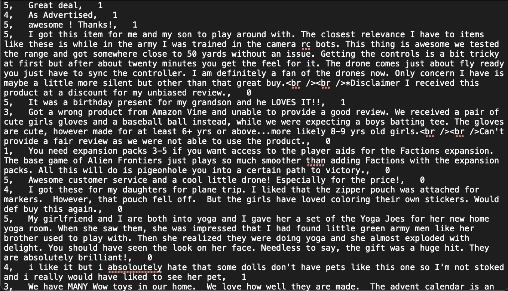
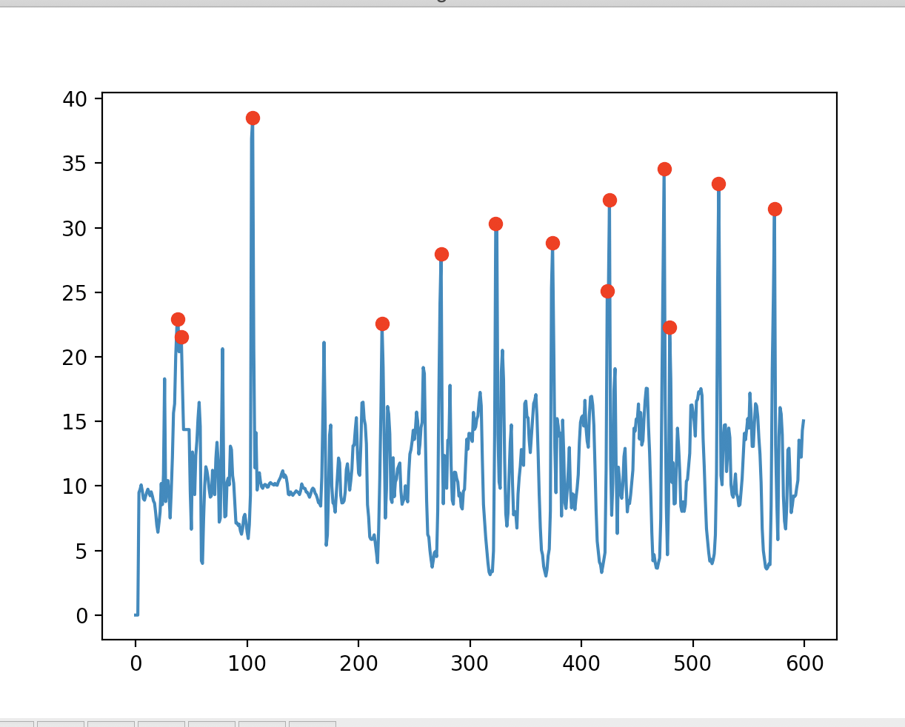
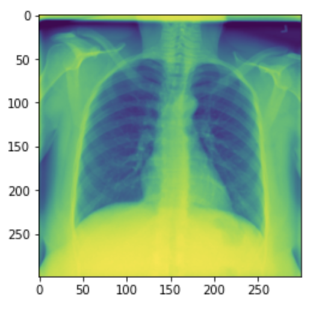

Hobbies & Projects
Home
Accolades
Coursework
Activities
Hobbies & Projects
AP Computer Science A Projects
Fake Amazon Reviews
Detects if an Amazon review is overly postive or negative
Counted word occurrence, number of unique words,
sentence length, punctuation, text readability
Collaborated with Monta Vista High School
Achieved roughly 60 percent accuracy
Flower Classification
Used UCI Iris dataset
Classifies flowers into setosa, virginica, and versicolor
Implements KNN algorithm
Basic introduction to perceptrons
Step Counter
Explored the flexibility of Python
Used accelerometer and gyrometer data to detect peaks
in order to determine the number of steps taken
Implemented a moving average and blurring data
Personal Projects
Lung Radiograph Disease Classification
Data adopted from Kaggle dataset
Classifies lung images as Covid-19, Lung Opacity, Normal,
or Viral Pneumonia
Uses Tensorflow for image augmentation and CNN model
Attempts to use Generative Adversarial Network to create images
NBA Classification (Tentative)
Attempts to learn features based on athletes who made it
to the NBA and didn't
Uses a deep CNN to classify faces of people
Will implement a Deep Convolutional Generative Adversarial Network
to generate potential images of NBA athletes
  